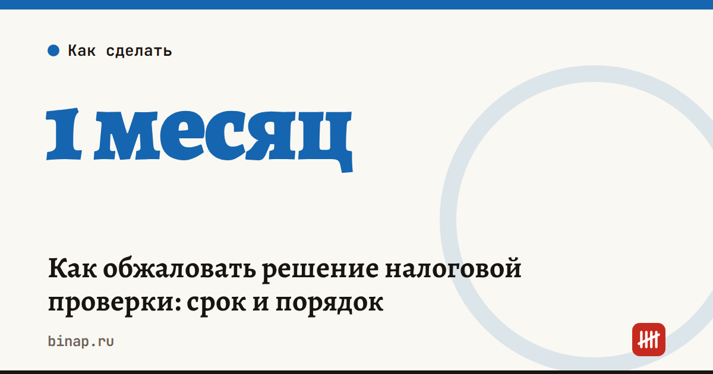

Как обжаловать решение налоговой проверки: срок и порядок

Сроки, изменения и разборы для ИП и самозанятых — каждое утро в Telegram и MAX. Подпишитесь, чтобы не пропустить.
Решение по налоговой проверке вступает в силу через месяц после того, как вы его получили (п. 9 ст. 101 НК). Этот месяц — ваше окно, чтобы подать апелляционную жалобу и не дать налоговой сразу взыскивать деньги.
Как это работает: - Апелляционную жалобу можно подать, пока решение не вступило в силу (ст. 139.1 НК). Пока её рассматривают, решение не вступает в силу — значит, требование об уплате доначислений, пеней и штрафа не придёт. - Жалобу адресуете вышестоящему органу (обычно УФНС региона), но отправляете через свою инспекцию. Та обязана переслать её с материалами в течение трёх дней. - Подать можно на бумаге, по ТКС или через личный кабинет налогоплательщика. - УФНС рассматривает жалобу месяц и может продлить срок ещё максимум на месяц, если нужны документы (ст. 140 НК). - Варианты итога: жалобу оставят без удовлетворения, решение отменят полностью или частично, отменят и примут новое. - Если месяц пропущен, жалобу на вступившее в силу решение можно подать в течение года со дня его вынесения (ст. 139 НК). Но взыскивать деньги налоговая при этом уже может.
Пример. Решение вручили 2 ноября — в силу оно вступит 2 декабря. Жалобу безопасно отправить до конца ноября, с запасом на выходные и сбои ТКС.
Что сделать сейчас: 1. Запишите дату, когда вам вручили решение. Если его прислали заказным письмом, датой вручения считается шестой день после отправки. 2. Выпишите каждый пункт, с которым не согласны, и приложите документы, которые это подтверждают. 3. В жалобе укажите решение, причины несогласия и что вы просите: отменить решение полностью или в части. 4. Отправьте жалобу через личный кабинет или ТКС и сохраните квитанцию.
Частые вопросы
Остановит ли жалоба взыскание? Апелляционная — да: пока её рассматривают, решение не вступает в силу.
Можно ли заплатить, чтобы не копились пени, и всё равно спорить? Да. Исполнить решение до вступления в силу разрешено, и жалобе это не мешает (п. 9 ст. 101 НК).